01 / Design and provision
Build the foundation
Translate application needs into cloud architecture, networking, identity, compute and storage. Make infrastructure repeatable with Terraform, CloudFormation and Ansible.
VENKATA GANJI / ENGINEERING PORTFOLIO
AI infrastructure and platform engineer with 12 years building and operating production distributed systems. I build cloud-native platforms from the initial architecture and infrastructure foundations through deployment, observability, high availability and disaster recovery. At Freddie Mac, I designed and productionized cloud infrastructure and recovery systems. At Apple, I co-owned AI platform engineering and owned model-weight tooling and Solr infrastructure.
12 years of production engineering · Concord, California
LOOKING FOR ARCHITECTURE DIAGRAMS? Jump to four engineering stories ↘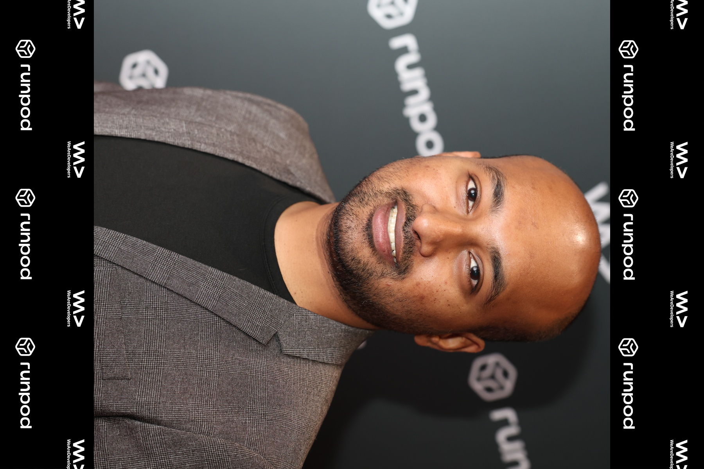
AI PLATFORM / MY CONTRIBUTION
At Apple, through Mphasis, I co-owned platform engineering for an internal enterprise e2e private AI serving platform. These four areas show my hands-on responsibilities.
Model-weight serving, onboarding, rapid prototyping and decommissioning tooling. Helm, Argo CD and vLLM; S3-to-FSx weight staging, integrity checks and read-only serving mounts.
Go checksum CLI · Python automationProvisioning, performance engineering, lifecycle tooling and IaC. Solr 9.9 at approximately 200-node, multi-region scale.
15,000+ embedding collections · five clusters in one regionKubernetes setup, upgrades, patching and production operations. GitOps onboarding with developers across Dev/UAT/Prod; logs, dashboards, alerts and incident response.
PCAP · p95/p99 · queue backlogs · PVC diagnosticsGPU cluster setup, upgrades, patching and operations on AWS EC2 with NVIDIA V100, A10G, L40S and A100 GPUs. Runtime sizing, tensor parallelism and LoRA configuration.
Go Kafka topic/user resource generator · KubernetesStudio UIs and APIs; ingestion, retrieval, agent orchestration and model access. AWS · GCP · Alibaba Cloud · Apple private cloud.
Ownership comes first: model lifecycle tooling and Solr were owned; Elasticsearch, Milvus, application Kubernetes and GPU infrastructure were co-owned with the team.
The platform was a team effort. The map distinguishes my infrastructure and tooling responsibilities from the wider application architecture.
See the engineering decisions and results ↗CLOUD-NATIVE PLATFORMS / END-TO-END DELIVERY
I connect the full platform lifecycle: architecture, cloud foundations, infrastructure as code, workload deployment, observability, high availability and disaster recovery. My work at Freddie Mac and Apple combined design, hands-on engineering and ongoing production responsibility.
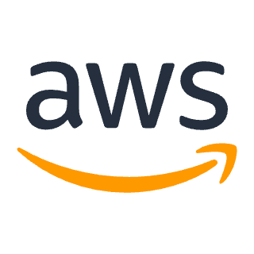
AWS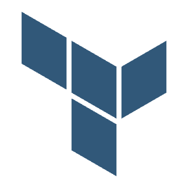
Terraform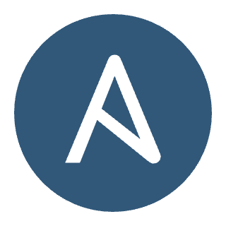
Ansible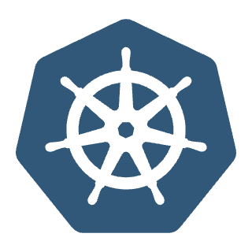
Kubernetes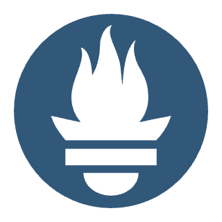
Prometheus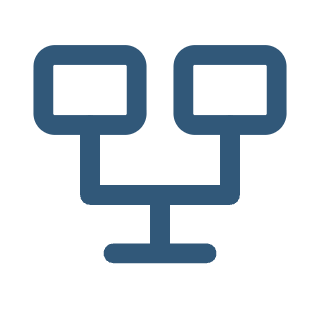
High availability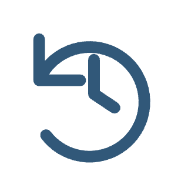
Disaster recovery01 / Design and provision
Translate application needs into cloud architecture, networking, identity, compute and storage. Make infrastructure repeatable with Terraform, CloudFormation and Ansible.
02 / Deploy and automate
Connect infrastructure to application delivery, Kubernetes and GitOps onboarding. Write deployment, bootstrap and lifecycle tooling to make delivery repeatable.
03 / Observe and operate
Build operational visibility through logs, metrics, dashboards and alerts. Investigate latency, network paths, queue backlogs and storage problems across the request and data flows.
04 / Keep available and recover
Connect high availability with recoverable state, cross-region replication, backups and provisioning automation. Plan how the platform returns to service when a component or region fails.
FREDDIE MAC / DESIGNED & PRODUCTIONIZED
Designed cloud foundations spanning private connectivity, load balancing, autoscaling, federated identity, storage and reusable IaC. Built and productionized hybrid-cloud disaster recovery with approximately 15-minute RPO and 2-hour RTO for that environment. My work covered architecture, tooling, observability and production operations.
APPLE / CO-OWNED PLATFORM ENGINEERING
Co-owned the enterprise AI platform’s infrastructure lifecycle, from cloud foundations and application/GPU Kubernetes setup to upgrades, patching, GitOps onboarding, observability and incident response. Owned model-weight tooling, Solr infrastructure and performance engineering, and Mac document-conversion infrastructure.
The recovery figures describe the Freddie Mac DR environment. Apple responsibilities distinguish individually owned systems from platform infrastructure co-owned with the team.
Explore cloud architecture, operations and recovery →KUBERNETES / GPU & APPLICATION PLATFORMS
At Apple, I co-owned the Kubernetes foundation for GPU model hosting and the ingestion and inference services around it—from cluster setup, upgrades and patching to GitOps onboarding and production operations.
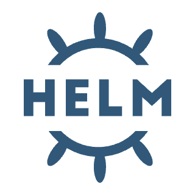
HelmCo-owned application and GPU cluster lifecycle across NVIDIA V100, A10G, L40S and A100 environments. Kept infrastructure changes connected to the workloads using it.
Partnered with developers on GitOps onboarding. Owned model-weight serving and lifecycle tooling, including a Go checksum CLI, and wrote or modified Go tooling for Kafka topic/user resource generation.
Co-owned observability and incident response. Followed failures through network PCAP, p95/p99 latency, ingestion and request queues, and Kubernetes persistent storage.
INFERENCE ENGINEERING / PRODUCTION FOUNDATION + ACTIVE LEARNING
My inference engineering foundation comes from production platform work. At Apple, I worked alongside developers on an AI serving platform—owning model-weight onboarding and serving tooling, working with vLLM deployment configuration, and co-owning GPU Kubernetes operations.
I’m now deepening that foundation through Abi Aryan’s inference engineering course. My focus is understanding how serving behavior connects to GPU memory, prefill and decode, KV-cache management, and latency and throughput tradeoffs.
PRODUCTION FOUNDATION
ACTIVE LEARNING
I can contribute immediately to serving-platform infrastructure, deployment tooling and production troubleshooting, while learning the deeper inference internals as I go. I bring distributed-systems judgment, a habit of investigating across layers, and accountability for production behavior.
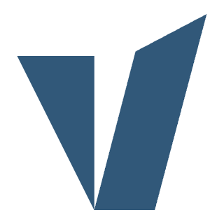
vLLM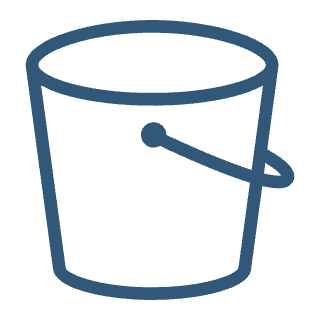
S3 / FSx weight staging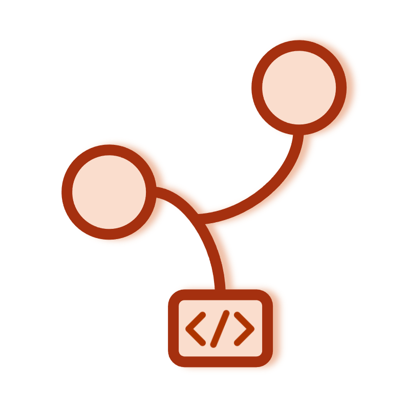
SGLang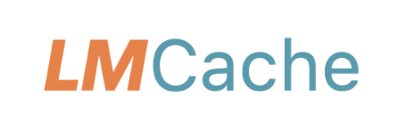
LMCacheApple experience covers serving-platform infrastructure and tooling. Deeper inference optimization and the next-focus tools are part of my ongoing learning.
Explore my inference engineering direction →SELECTED WORK / FOUR ENGINEERING STORIES
Each case connects the problem, my contribution, the system design and the outcome. Start with GenAI for AI platform roles, or explore the data and migration work underneath.
Model-weight onboarding, GPU Kubernetes operations, search infrastructure and production reliability across an internal enterprise AI serving platform.
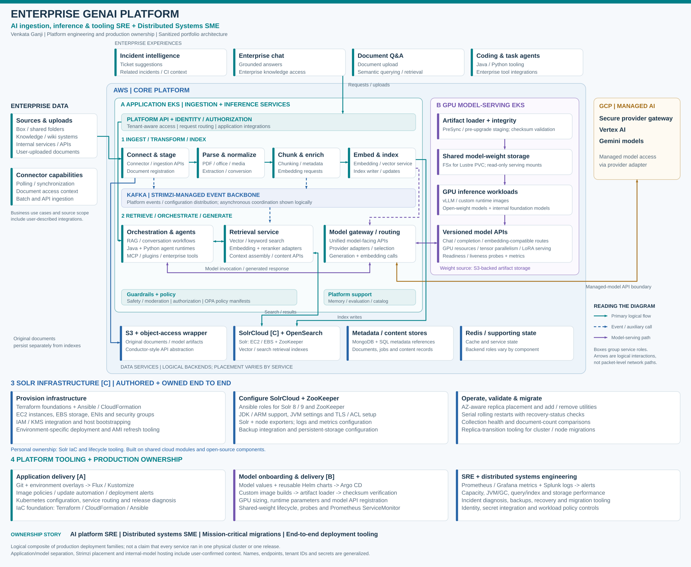
Turning packets, flows and security events into a correlated data platform, with performance work from the network interface through distributed storage.
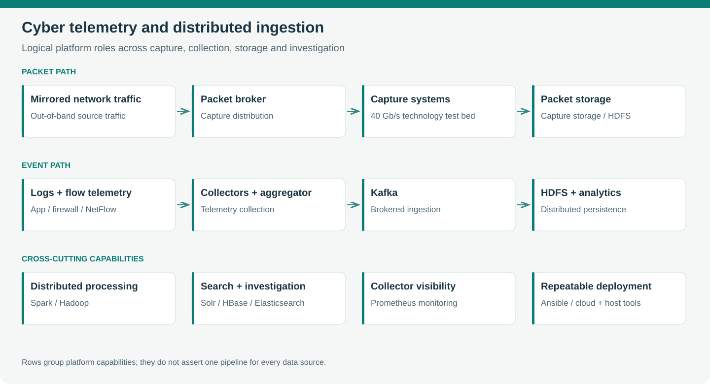
A migration that connected data movement, search modernization, application access and operational recovery.
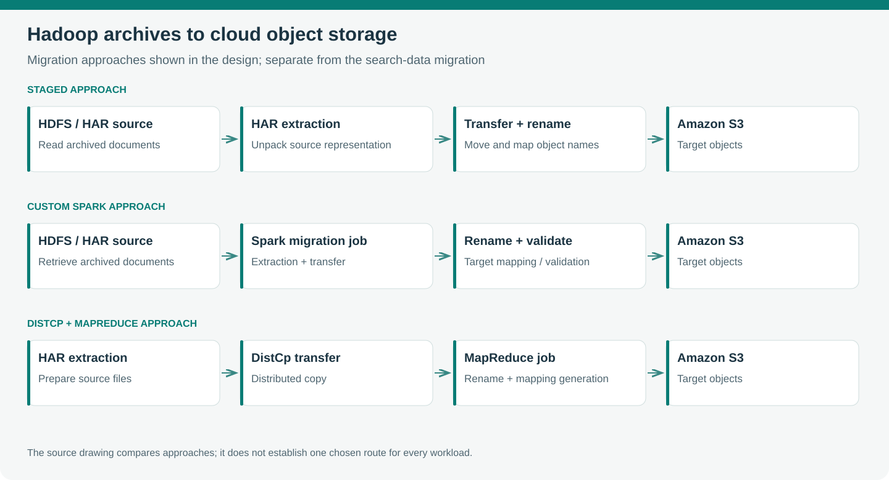
Building the cloud foundation and carrying it through automation, production operations, high availability and disaster recovery.
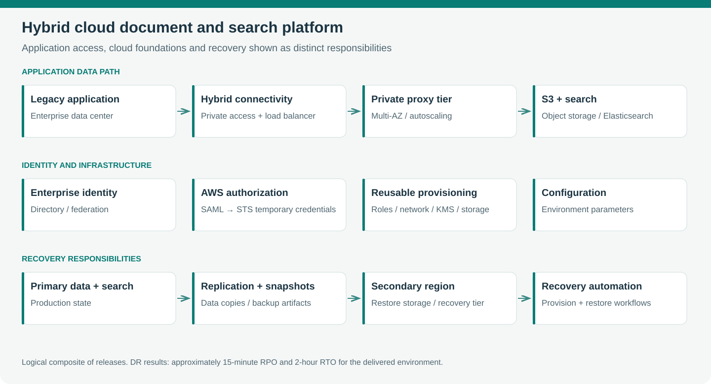
WHAT I BRING TO YOUR TEAM
Hands-on engineering across the full platform lifecycle—from infrastructure and deployment to performance, observability and recovery.
Owned model-weight serving and onboarding tooling, rapid prototyping and decommissioning; co-owned GPU Kubernetes operations.
vLLM · Helm/Argo CD · S3/FSx · Go checksumsOwned Solr infrastructure, IaC and performance engineering; co-owned Elasticsearch and Milvus.
15,000+ collections · Five Solr clusters · ~200 nodesCo-owned ingestion/inference and GPU Kubernetes lifecycle, GitOps onboarding and production operations.
Setup · Upgrades · Patching · Developer toolingDesign and build cloud foundations, automate infrastructure and delivery, and connect observability, production operations and recovery. Delivered at Freddie Mac and co-owned AI platform engineering at Apple.
Architecture · IaC · Delivery · Observability · HA/DRTOOLS IN CONTEXT
Technology choices connected to the systems I built and operated.
Apple
Owned model-weight and Solr tooling; co-owned GPU/Kubernetes platforms, Elasticsearch, Milvus and production reliability. AWS and GCP Vertex AI platform engineering.
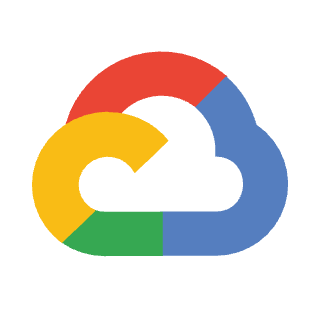
GCP / Vertex AI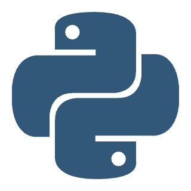
PythonFreddie Mac
Cloud foundations, reusable IaC, deployment and operations tooling, observability and hybrid-cloud disaster recovery.
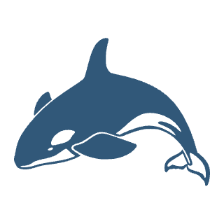
HBase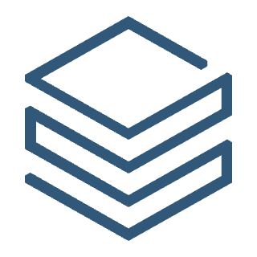
DatabricksCyber Data Lake / Amorphic
Supermicro servers, high-throughput NICs, IXIA, network integration and performance tooling.
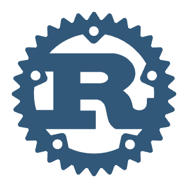
Rust exposure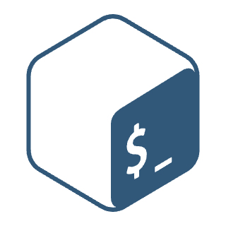
Bash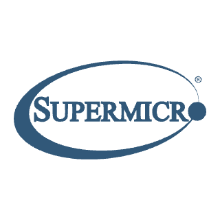
Supermicro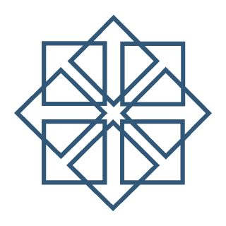
CentOSEarlier
Cloud engineering, including Azure data-lake work at Cloudwick, Hadoop/HBase operations, automation and high availability across earlier engagements.
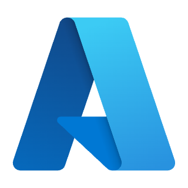
AzureHOW I WORK
I build cloud-native platforms from their foundations and stay with them through production. My work spans architecture, networking and identity, infrastructure as code, deployment automation, observability, high availability and disaster recovery. I write the tooling, investigate performance and remain accountable for operational behavior.
At Apple, as a contractor through Mphasis, that meant ingestion, inference and model-serving infrastructure. At Freddie Mac through Cloudwick, I delivered solutions architecture, software engineering and production operations. My earlier Cloudwick work included ownership across cyber telemetry hardware, network integration, performance tooling and large distributed-data environments.
Master’s in Computer Science, Texas A&M University, 2014. Additional graduate study at Montana State University, 15 credits.
Get in touch ↗Start with the simplified architecture views, then see low-resolution previews of the original diagrams in each case study. Full-resolution originals are not offered here. Each case distinguishes my contribution, team architecture context and the scope of reported results.